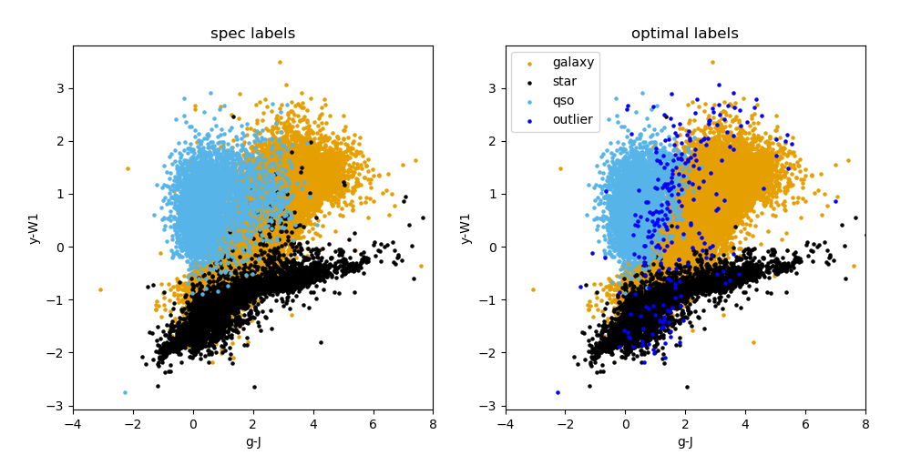
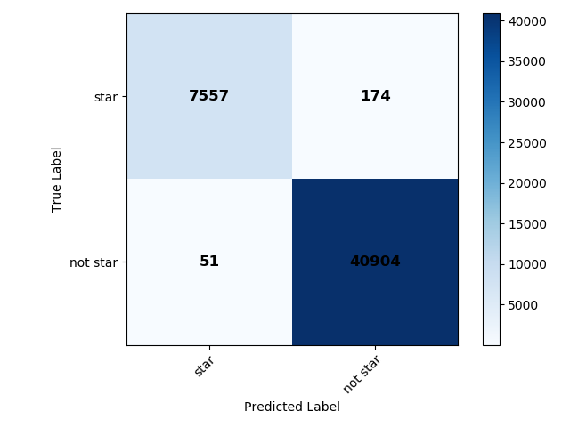
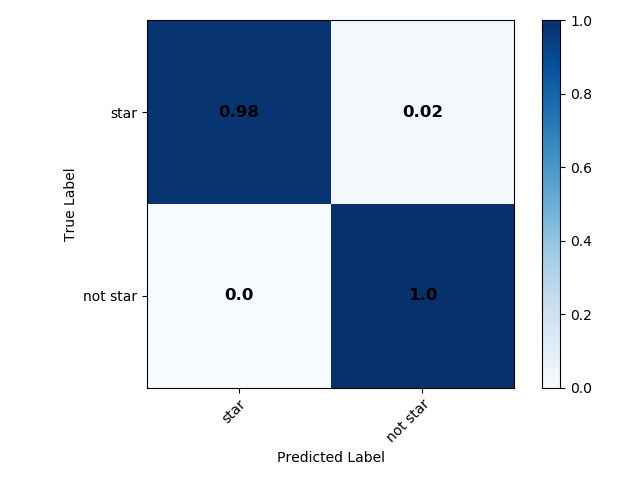

classifier_consolidation module¶
The consolidation stage in this pipeline includes two methods as detailed in Section 5.3 in Logan and Fotopoulou (2020). The relevant text is copied here for reference:
Optimal method: For data points that are classified positively by two binary classifiers separately, we assign the point to the rarest object class, as follows: (i) sources classified as both STAR and GAL, we call STAR; (ii) sources classified as both QSO and GAL, we call QSO; (iii) sources classified as both STAR and QSO, we call QSO. We also define an outlier class, (different to the HDBSCAN outlier class) that we refer to as the “post-consolidation outlier” class. These post-consolidation outliers are those that are not classified positively by any of the binary classifiers.
Alternative method: The second consolidation method we investigated, which we refer to as the “alternative” method, we simply reassign all doubly positively classified objects to the post-consolidation outlier class.
In the classifier_consolidation module this consolidation step is done for the labels that are predicted for the best HDBSCAN classifier setup as found in the binary_classifier module. We note that these labels are those predicted by our setup for data that have known labels. We note that the consolidation step is also run in the predict module. The main idea of this script is summarized in the flowchart below:

Description of code¶
We now run through the code written in the classifier_consolidation module:
Data read-in and setup: The function get_data is used
to read in the catalogue data, and then the binary labels from each of the three
classifiers’ labels are read in to a dictionary dict_predicted_labels.
Consolidation step and colour plots: The function find_object_indices
is called and returns a list of label indices (e.g. for where a star and a galaxy
are positively identified by their respective classifier) that is then passed to
the function do_consolidation that returns the final consolidated labels
(for both consolidation methods mentioned above). The final consolidated labels
are also plotted with the function plot_classification, and the pre- and
post- consolidation labels appended to the original catalogue and saved to file.
Information regarding the number of objects before and after consolidation is also
returned by the find_object_indices and plot_classification functions
respectively, and written to a text file.
Metric scores: The final consolidated labels are then passed
to the function compute_metric_scores which computes various performance
metrics for the labels, which are also written to a text file.
Confusion matrices: The function plot_confusion_matrix
is then used to plot confusion matrices (normalized and not normalized) for the
output labels for both consolidation methods and these are saved.
Outputs: The images output from this module run can be found in the data/output/consolidation directory. They include colour plots for both consolidation methods (an example for the optimal consolidation method is shown below), and confusion plots for both consolidation methods and for each binary classifier separately after consolidation (those for the star classifier, both normalized and unnormalized are shown below for the optimal consoldiation method), and for all objects at once. Useful text files, such as the summary of the consolidation step and metrics can be found in the same directory. The catalogue with predicted labels is also given in this directory.
  {kind=link}
{kind=link}
{kind=link}